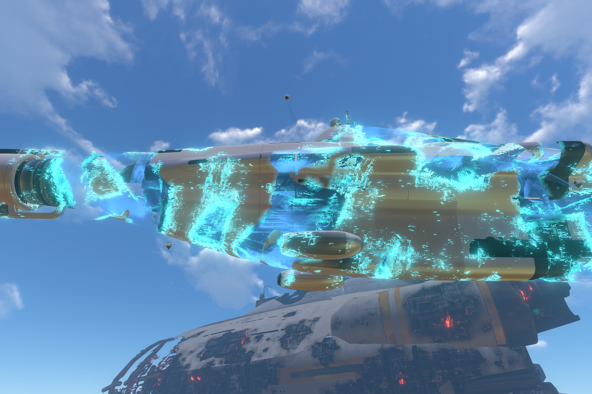
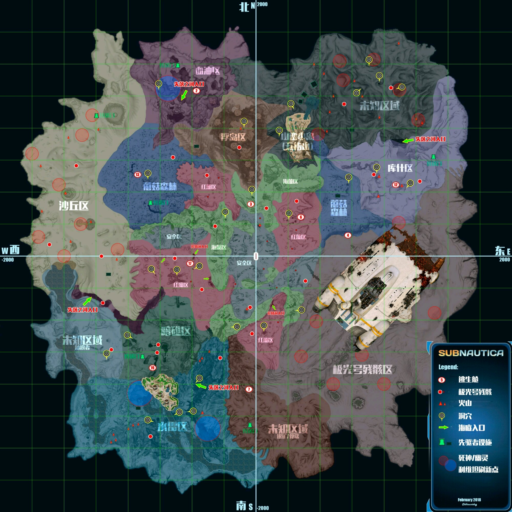

最后更新：
Subnautica这个游戏将科幻、探索、剧情、惊悚这四个元素完美地融为一体，即使顶着80块一份的价格，我也要吹爆！
Subnautica这个游戏将科幻、探索、剧情、惊悚这四个元素完美地融为一体，即使顶着80块一份的价格，我也要吹爆！
除了一堆未来世界和外星人的高科技产品，这游戏里的载具是最让我激动的。尤其是潜水艇独眼巨人号，从外观到内部的细节都是诚意满满，展现了极高的制作水准，驾驶舱的设计也是很有新意，未来风满分！
地图大就不说了，关键是这个地图还有好几层，从岛屿陆地到海底1700米，每一层都有不同的景观。还有各种遗迹等待探索，在探索过程中解锁新的黑科技和了解新的剧情。
灾难电影的标准剧情，主线支线交叉并行。大致剧情（不涉及剧透）就是主人公的飞船在这颗星球上坠毁并且感染了一种致命的病毒，为了求生，主人公必须去探索星球上的最早殖民者外星人留下的遗迹（主线剧情），以及追寻之前在这颗星球上居住过的人类先驱们留下的线索（支线），去寻找病毒的治疗方法，并且找到逃出这颗星球的办法。
整个故事写得还是挺感人的，情节也有波澜，配合整个游戏的探索进度和风格，体验是很不错的。如果我在通关前能忍住不看别人写的剧情梳理和B站视频的话，估计游戏体验还会再上升一个档次。
关于详细的剧情解析，可以参照这个贴子（内含严重剧透）
这游戏不仅是个灾难片，还是个恐怖片.jpg